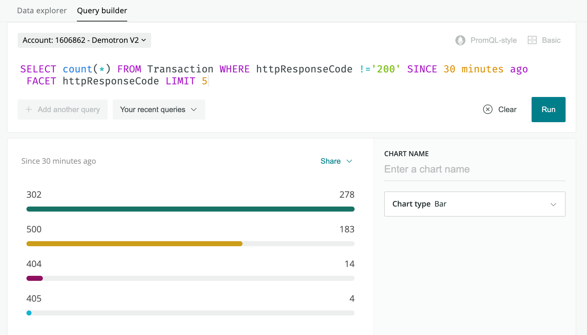

New Relic dashboards enable collaboration and help teams provide improved digital customer experience through better performing applications and websites. Dashboards also increase employee productivity by helping teams align with business goals to better understand how their application's performance impacts their full business.
When issues arise, dashboards help teams narrow their search to a manageable number of endpoints and service layers, reducing the time to detection or resolution. Fostering collaboration mitigates the risk of friction, giving each stakeholder data relevant to their role.
This tutorial assumes:
For more information, review New Relic's objectives and baselines tutorial, which also includes detailed information about SLIs, SLOs, and SLAs.
In this tutorial, New Relic recommends that you start with team dashboards and then build a business performance dashboard. Team dashboards let you visualize the service level indicators (SLIs) and other key performance indicators (KPIs) for your applications at a glance by providing the status of relevant components in a single view.
For more information on why development and operations teams should track services running in production and make them highly visible, see the O'Reilly DevOps Handbook
Team dashboards enable collaboration and provide a shared understanding of which areas of your application or organization needs attention.
For example, for an SLI based on HTTP status codes, use the following NRQL query:
SELECT count(*) FROM Transaction WHERE httpResponseCode != 200 SINCE 30 minutes ago FACET httpResponseCode

Here's an example NRQL query for an SLI based on HTTP status codes.
In addition to application performance, it's also important to measure efficiency of your delivery pipeline. Key indicators of your team’s progress toward fully functional DevOps include:
For more information about these metrics, review New Relic's tutorial about iterating and measuring impact.
As you gather interesting views for your first dashboard, don't overthink it. Consider this initial dashboard a discussion starter.
After creating a basic dashboard that charts some of the key data for your business and your team, share the dashboard with your team and other stakeholders. As you engage others for feedback, you may find metrics are missing. At the same time, do not be afraid to remove a metric that is not actionable or does not make sense.
A well-formed team dashboard can help facilitate productive daily discussions and effective collaboration across your team. Good discussion questions include:
Also, determine how this team dashboard can be most helpful in your daily workflow. For example, check your dashboards during your daily standup to see if you need to re-prioritize their daily work.
Now that you have buy-in from the team, build out a full dashboard with the widgets your team has agreed on. At the application level, your goal is to ensure that your dashboard tracks both of these criteria:
Here's an example team dashboard that shows both the app's health and the team's success with business goals.
We let you create many chart types for the most logical data to track. Recommendation: At a minimum, include the following:
Your business performance dashboard will give your teams an overview of how users are experiencing your app. Most New Relic customers want to know how their apps are experienced across different cohorts, such as geographic locations or device types.

Here's an example team dashboard that shows key performance indicators (KPIs).
Companies in many industries consider the following key performance indicators (KPIs) essential to business performance. Use the following NRQL examples to build widgets for your dashboards.
To run a NRQL query for Browser session count:
SELECT uniqueCount(session) FROM PageView
To run a NRQL query for Browser session duration:
SELECT average(duration) AS 'Seconds' FROM PageView FACET session
To run a NRQL query for Browser page views:
SELECT count(*) AS '' FROM PageView
To run a NRQL query for Browser page rendering:
SELECT average(pageRenderingDuration) FROM PageView
To run a NRQL query for page conversion funnel:
SELECT funnel(session,
WHERE pageUrl LIKE 'https://newrelic.com//'/ AS 'Home',
WHERE pageUrl LIKE 'https://newrelic.com/search#stq=apm&stp=1' AS 'Search',
WHERE pageUrl LIKE 'https://docs.newrelic.com/docs/apm' AS 'Select')
FROM PageView
To run a NRQL query for APM error percentage:
SELECT count(*) FROM Transaction WHERE httpResponseCode !='200'
To run a NRQL query for Browser DOM readiness:
SELECT average(domProcessingDuration) FROM PageView